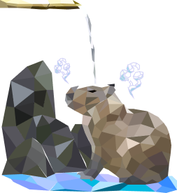

使用者故事 User Story
: Jani cho隨著科技的進步，現代人獲取最新資訊皆透過網際網路，但你知道網路是怎麼運作、網頁又是怎麼被創造出來的嗎 ? 一個網頁的開發，涵蓋了資訊架構、程式開發、視覺美體呈現等等，是需要許多職位各司其職集結而成的。 想知道網頁設計還包含哪些相關的職位與工作嗎，趕快來一探究竟吧！
章節重點1.網路是如何運作 2.網頁的構成 (CSS +HTML +Javascript) 3.網頁又分為靜態網頁、動態網頁 4.網頁的開發系統 ( 前端工程 + 後端工程 ) 5.網站的類型 (一頁式網站、企業形象網站、部落格網站、購物網站/電子商務 ) 6.網頁設計相關職位與工作